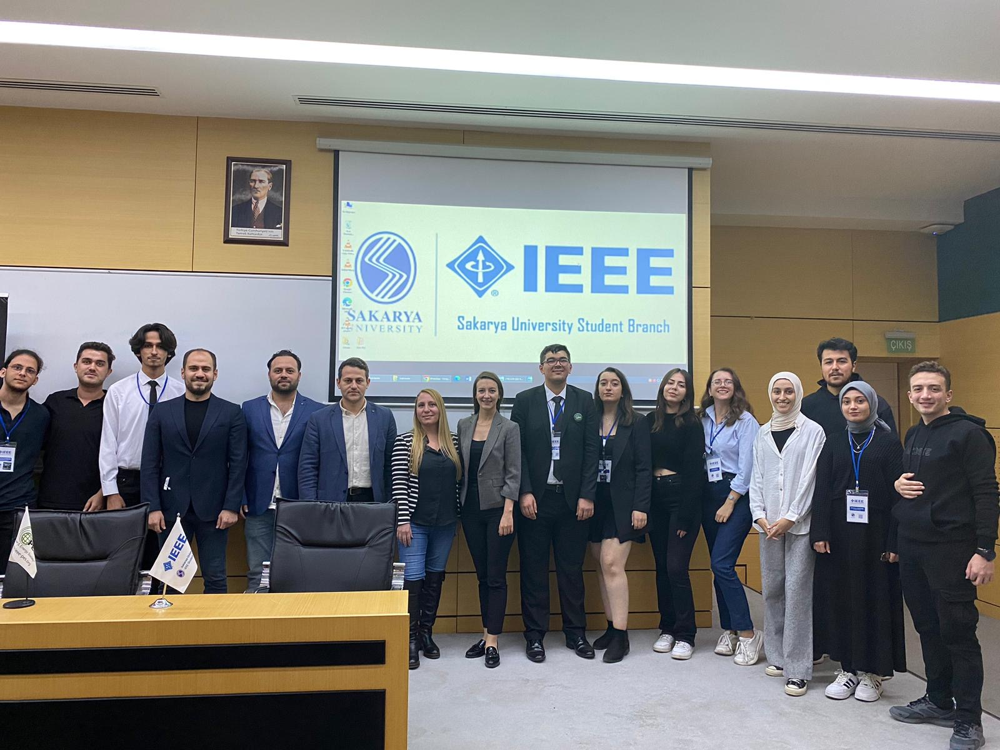

Pes Zirvesi - 9 Kasım 2023

IEEE Sakarya Üniversitesi Öğrenci Topluluğu Güç ve Enerji Komitesi (PES) olarak; 9 Kasım Perşembe günü Yenilenebilir Enerji ve Otomotiv sektörüne odaklandığımız PES ZİRVESİ'23 etkinliğimizi üniversitemizin Kültür ve Kongre Merkezi'nde düzenledik.
Etkinlik boyunca, katılımcılar sektördeki son gelişmeleri takip etme ve sektör profesyonelleriyle doğrudan iletişim kurma şansı buldular. Ayrıca, öğrencilerin kariyer hedeflerine yönelik ilham verici konuşmalar ve mentorluk imkanları da sunuldu.
PES ZİRVESİ'23'ün amacı, öğrencilere sektördeki güncel gelişmeleri yakından takip etme ve gelecekteki kariyerlerini şekillendirme konusunda bilgi ve motivasyon sağlamaktı. Bu bağlamda, etkinlik katılımcılarına değerli bir deneyim sunmanın yanı sıra, sektöre yeni katılmayı düşünenlere yol gösterici bir rol üstlenmeyi hedefledik.
İlk oturumumuzun konuşmacısı olan ISP Enerji'nin genel kurucularından ve şu anda Genel Müdürlük görevini yürüten Sayın Sercan Süzen, katılımcılara yenilenebilir enerji sistemlerinin mevcut durumu ve özellikle güneş paneli sistemlerinin optimizasyonu konularında değerli bilgiler aktardı. Sunumunda, güneş enerjisi alanında geniş bir tecrübeye sahip olan Süzen, yenilenebilir enerji kaynaklarının öneminin giderek arttığı günümüzde, bu alanda yapılan çalışmaların ve projelerin önemine vurgu yaptı.
Süzen, güneş paneli sistemlerinin kurulumunda dikkat edilmesi gereken önemli faktörlerden bahsederek, optimizasyon sürecinde hangi koşulların gözetilmesi gerektiği konusunda katılımcıları bilgilendirdi. Güneş paneli sistemlerinin verimliliğini artırmak için doğru konumlandırma, panel tipi seçimi, güneş ışınlarının en uygun şekilde kullanılması gibi faktörlerin önemine değindi. Ayrıca, güneş paneli sistemlerinin bakımı ve yönetimi konularında da pratik öneriler sunarak, sistemlerin uzun vadeli verimliliğini artırmanın stratejilerini paylaştı.
İkinci oturumda konuşmacı olarak katılan Zorlu Enerji Ar-Ge Departmanı Müdür Yardımcısı Sayın Nilgün Şide Kurtcu, iklim krizi ve enerji sektörünün geleceği üzerine değerli bir sunum gerçekleştirdi. Katılımcılara, iklim krizine yönelik uluslararası anlaşmaların ve UNDP'nin belirlediği hedeflerin önemini vurgulayarak, bu hedeflerin hayata geçirilmesinin toplumlar üzerindeki etkilerini anlattı.
Türkiye'deki enerji sektörünün mevcut durumunu, sera gazı emisyonları ve enerji kaynakları açısından ele alan Kurtcu, sektörün karşılaştığı zorlukları ve çözüm yollarını katılımcılarla paylaştı. Ayrıca, Zorlu Enerji'nin bugüne kadar gerçekleştirdiği ve gelecekte yapmayı planladığı projelerden de örnekler vererek, şirketin sürdürülebilirlik ve yenilikçilik konusundaki vizyonunu aktardı.
Üçüncü oturumda konuşmacı olarak katılan Akbank'ın kurumiçi girişimlerinden olan Voltla'nın CEO'su Sayın Esra Gül Korkmaz, girişimcilik dünyasında başarılı olmak için izlenmesi gereken yolları ve fırsatların nasıl değerlendirilebileceğini katılımcılara aktardı. Korkmaz, girişimcilik serüveninde karşılaşılan zorlukları ve bu zorlukların üstesinden nasıl gelindiğini örnekleriyle paylaşarak, katılımcıların motivasyonunu artırdı.
Voltla'nın kuruluş hikayesinden örnekler vererek, başarılı bir girişimin nasıl ortaya çıktığını ve geliştiğini açıklayan Korkmaz, girişimcilerin vizyoner olmalarının, fırsatları doğru bir şekilde değerlendirmelerinin ve yenilikçi çözümler üretmelerinin önemine vurgu yaptı. Ayrıca, başarılı bir girişimin sadece fikir aşamasında değil, uygulama ve yönetim süreçlerinde de disiplinli çalışma ve kararlılık gerektirdiğini belirtti.
Dördüncü ve son oturumda, Anadolu Isuzu'nda Yeni Sistemler Takım Lideri olarak görev yapan Sn. Fatih Okan Marangoz'un liderliğinde gerçekleşen sunum, otomotiv sektörünün geleceğine ışık tuttu. Marangoz'un vurguladığı gibi, elektrikli araçlar günümüzün ve geleceğin mobilite çözümlerinde önemli bir role sahip olacaklar. Bu yüzden, elektrifikasyon konusunda derinlemesine bir anlayış geliştirmek ve bu alandaki gelişmeleri yakından takip etmek büyük önem taşıyor.
Sunumun odak noktası, elektrikli araçların temel bileşenlerinden biri olan bataryaların çeşitli türleri ve teknolojileriydi. Batarya teknolojisinin hızla ilerlemesi, araçların menzilini artırma, şarj sürelerini azaltma ve daha güvenli ve sürdürülebilir bir sürüş deneyimi sağlama potansiyeline sahip. Bu nedenle, batarya teknolojilerinin ve gelişmelerinin yakından takip edilmesi ve bu alandaki yeniliklerin uygulanması, otomotiv endüstrisinin rekabet gücünü artırmak için kritik bir öneme sahip.
IEEE Sakarya Üniversitesi Öğrenci Topluluğu Güç ve Enerji Komitesi (PES) olarak; 9 Kasım Perşembe günü Yenilenebilir Enerji ve Otomotiv sektörüne odaklandığımız PES ZİRVESİ'23 etkinliğimizi üniversitemizin Kültür ve Kongre Merkezi'nde düzenledik.
